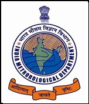

RESEARCH | JULY 2011
I worked at Global Telecommunication System Division, ISSD, IMD
Mentors: Dr N K Pangasa, Scientist E, Telecom | Mr Sourav Adhikary, Project Coordinator
RESEARCH | JUNE 2010
I did research under Group Energy, under which we:
Mentors: Dr N K Pangasa, Scientist E, Telecom | Mr Sourav Adhikary, Project Coordinator
The India Meteorological Department (IMD) is an agency of the Ministry of Earth Sciences of the Government of India. It is the principal agency responsible for meteorological observations, weather forecasting and seismology. IMD is one of the six worldwide Regional Specialised Meteorological Centres of the Tropical Cyclone Programme of the World Weather Watch of the World Meteorological Organization. It is regional nodal agency for forecasting, naming and disseminating warnings about tropical cyclone in the Indian Ocean north of the Equator.
The Mathematical Sciences Foundation (MSF) is a registered non-profit educational society. It has been engaged for several years in path-breaking and innovative programmes related to the teaching, understanding, learning and application of mathematics at the school, college and post-graduate levels.
The Foundation organized 'Inviting All Young Minds (IAYM) - 2010' during the month of June 2010, in order to stimulate creativity through ‘hands on’ applications of mathematics with the help of computing techniques and to encourage teamwork, communication and computational skills and out of the box thinking through real world applications.